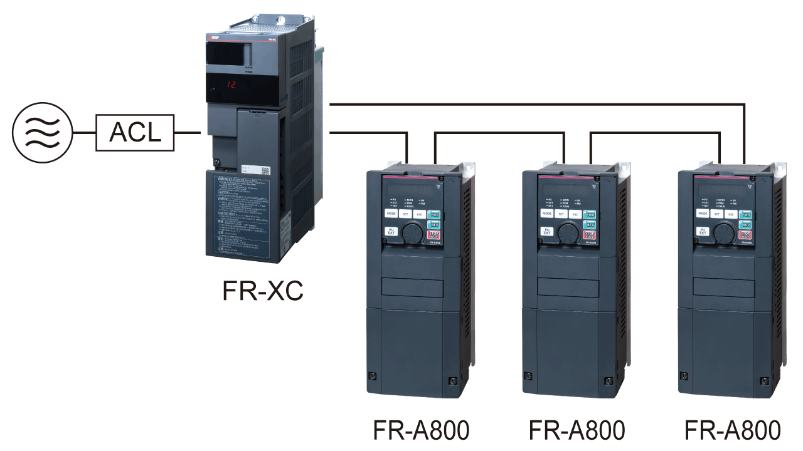

Seri Inverters-FREQROL FR-A800 PABRIK RAMAH LINGKUNGAN

PABRIK RAMAH LINGKUNGAN
Konsumsi daya oleh motor dikatakan berjumlah sekitar setengah dari seluruh konsumsi daya yang dihasilkan oleh industri manufaktur Jepang.
Pabrik dapat menghemat lebih banyak energi tanpa mengurangi produksinya.
Lebih sedikit energi dan lebih banyak produksi—seri FR-A800 akan membantu Anda mendapatkan keduanya.
Hemat energi sambil meningkatkan produksi pabrik.
Fungsi hemat energi yang disesuaikan dengan sistem dan aplikasi
Beragam fungsi
- ●Periksa efek penghematan energi secara sekilas
-
- Anda dapat memeriksa efek penghematan energi pada monitor penghematan energi.
- Jumlah daya keluaran yang diukur dapat dikeluarkan dalam bentuk pulsa.
- ●Kurangi konsumsi daya selama siaga
-
-
Sirkuit kontrol selain yang untuk komponen yang berhubungan dengan daya dapat dioperasikan dengan daya 24 VDC yang dipasok dari sumber daya eksternal.BARU
Karena rangkaian kontrol dapat menggunakan 24 VDC eksternal, rangkaian kontrol daya lainnya dapat tetap MATI saat tidak diperlukan penggerak, dan itu menghemat energi siaga. - Dengan menghidupkan/mematikan kipas pendingin berdasarkan status inverter, konsumsi daya yang boros selama penghentian dapat dikurangi.
-
Sirkuit kontrol selain yang untuk komponen yang berhubungan dengan daya dapat dioperasikan dengan daya 24 VDC yang dipasok dari sumber daya eksternal.BARU
- ●Hemat energi dengan kontrol eksitasi yang optimal BARU
-
Arus eksitasi terus-menerus disesuaikan untuk menggerakkan motor dengan metode yang paling efisien yang menghasilkan penghematan energi.
Misalnya, dengan kontrol eksitasi optimal dengan torsi beban motor sebesar 10% saat menggunakan SF-JR, efisiensi motor telah meningkat sekitar 15% dibandingkan metode kontrol V/F sebelumnya. - ●Pemanfaatan energi regeneratif yang efektif (opsi)
-
Beberapa inverter dapat dihubungkan ke konverter umum regenerasi daya (FR-XC)/konverter faktor daya tinggi (FR-HC2) melalui bus PN umum.
Daya regeneratif digunakan pada inverter lain, dan energi surplus dikembalikan ke catu daya, sehingga menghasilkan penghematan energi. Model 315K atau yang lebih tinggi adalah tipe inverter-konverter yang terpisah, yang cocok untuk regenerasi daya.BARU
Motor PM berkontribusi pada penghematan energi di pabrik
Motor PM
Jika inverter digunakan untuk aplikasi yang memerlukan torsi konstan, seperti konveyor, penghematan energi pabrik dapat dicapai dengan mengganti motor induksi Anda saat ini dengan motor magnet permanen (motor PM).
(Penyetelan diperlukan untuk motor IPM selain MM-CF, dan untuk motor PM dari produsen lain.)
●Mengapa motor PM begitu efisien?
- Arus tidak mengalir ke rotor (sisi sekunder), jadi tidak ada rugi tembaga sekunder.
- Fluks magnet dihasilkan oleh magnet permanen, jadi arus yang dibutuhkan lebih sedikit untuk menggerakkan motor.
Konveyor
Konveyor mengangkut berbagai barang dan produk sesuai dengan aplikasinya. Motor PM dapat menjaga kecepatan pengangkutan tetap konstan sekaligus menghemat energi.